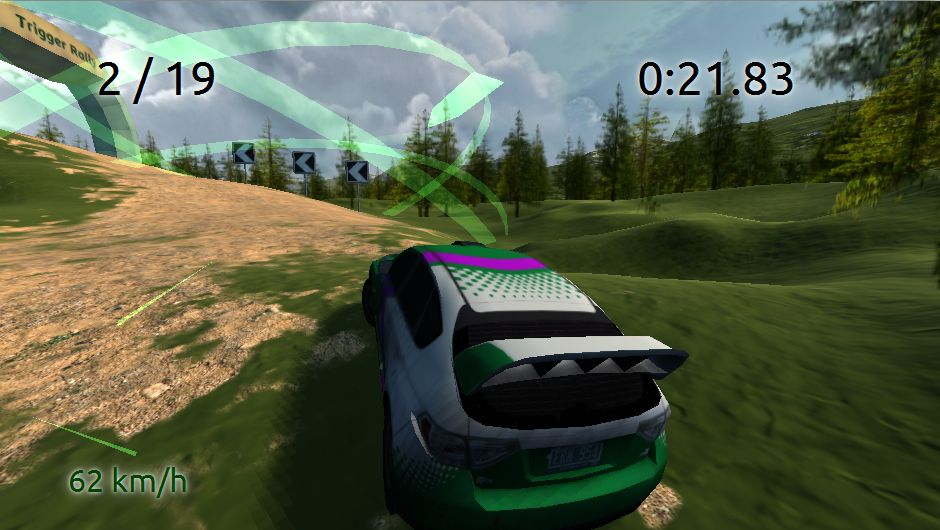
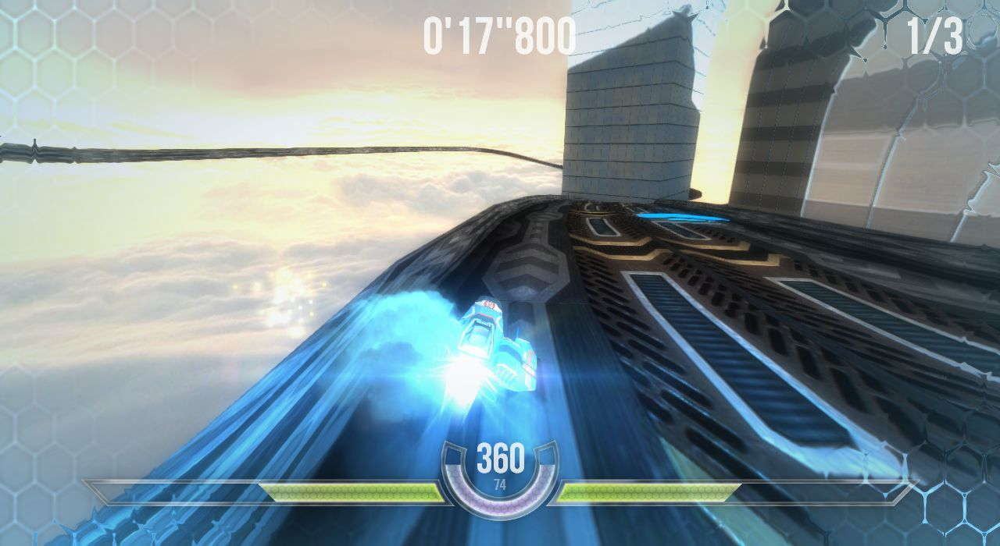
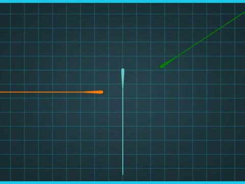
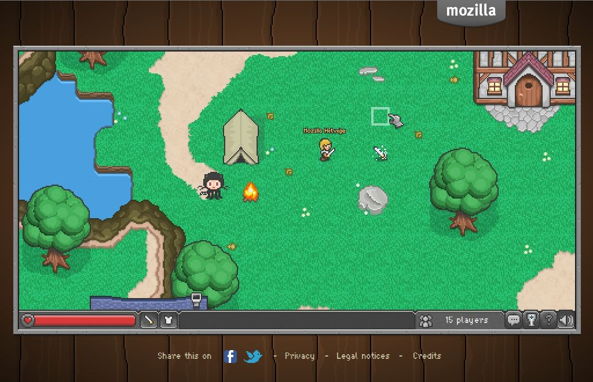
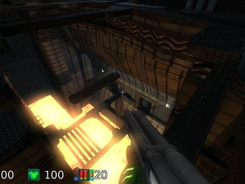
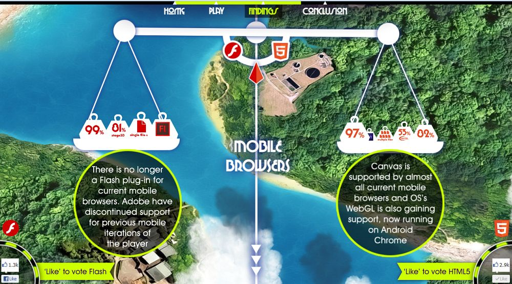
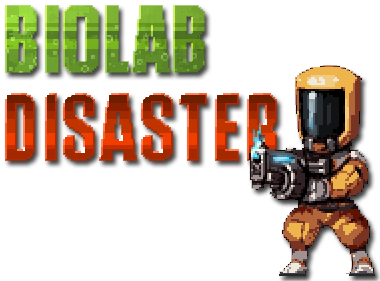
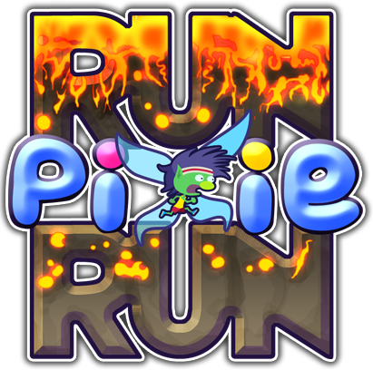

HTML5? Gyerekjáték!
Játékkészítés Open Web technológiákkal
HTML5/JS környezetben
Elõadó: Szmozsánszky István / @slsoftworks
Szmozsánszky István - Flaki
Webfejlesztõ @ HL-System Kft.
- Webfejlesztés (frontend/backend)
- Mobil alkalmazásfejlesztés (Android/Firefox OS)
- Indie játékfejlesztés
A diák elérhetõek itt:
http://slides.flaki.hu/mozhetvege13/
Mik azok a HTML5 játékok?
- HTML5 + CSS3 + JavaScript
- Új Open Web API-k, új lehetőségek (ezekről még lesz szó)
- Kiterjesztett hardver-hozzáférés, hardveres gyorsítás
Miért jó ez nekünk?
- Nyílt, folyamatosan fejlődő technológia
- Ingyenes: fejlesztés, terjesztés, hozzáférés
- Minden további extra plugin nélkül működik (kivéve mikor nem)
- Platform-független technológia
Mi az, ami még hiányzik?
Azért sajnos mégsem teljesen platform-független:
- Internet Explorer: IE10 előtt gyengécske feature-support
- WP7.5 - a mobil IE is folytatja a nagytestvér "hagyományát"
- ICS előtti Android verziók stock browsere (néhány esetben ezen a Fennec segíthet)
- DRM nem megoldott (obfuszkálás és/vagy minify segíthet)
Az Alapok
Kép & Hang
Kép & Hang
Canvas
- Alapvető 2D megjelenítés
- Megszokott grafikus primitívek (pont, vonal, négyzet, kör, ív...)
- Hardveres gyorsítás
https://developer.mozilla.org/en/HTML/Canvas
Kép & Hang
Canvas: Silk
http://weavesilk.com/
Kép & Hang
Canvas: DrawLive
http://www.flaki.hu/ocsi/drawlive/
Kép & Hang
WebGL
- Open GL technológián alapuló 3D megjelenítés
- Szintén a megszokott primitívákat használja
- Hardveres grafikus gyorsítás
https://developer.mozilla.org/en/HTML/WebGL
Kép & Hang
WebGL: Blossom Demo
http://www.bongiovi.tw/experiments/webgl/blossom/
Kép & Hang
WebGL: Trigger Rally
http://triggerrally.com/
Kép & Hang
WebGL: HexGL
http://hexgl.bkcore.com/
Kép & Hang
Audio & Audio Data
- Sztenderd HTML5 Audio és Mozilla kiterjesztések
- Vorbis majd Opus nyílt forráskódú kodekek
https://developer.mozilla.org/en/HTML/WebGL
Kép & Hang
Audio: Visualizer
http://robhawkes.github.com/webgl-html5-audio-visualiser/
Hardware és Extrák
További WebAPI-k
További WebAPI-k
Fullscreen API
- Bizonyos játékokhoz alapvető elvárás a minél átfogóbb játékélmény ("immersive experience")
- Az API-n keresztül kérheti az alkalmazás a teljes képernyős módot, de a felasználó megtagadhatja azt
https://developer.mozilla.org/en-US/docs/DOM/Using_fullscreen_mode
További WebAPI-k
Multitouch
- Az érintőképernyős eszközök többérintéses képességeinek kihasználására jött létre
- Az IE itt is keresztbetesz (WP 7.5 nem támogat semmiféle érintéses (Touch) vagy hagyományos egér (Mouse) eventet
https://developer.mozilla.org/en-US/docs/DOM/Touch_events
További WebAPI-k
Multitouch: Draggabilly
- Egységesíti az egeres és touch rendszerek API-jait
- Könnyíti a kezelést, támogatja a multitouchot
- Próbáljátok ki mobilon/tableten:
http://draggabilly.desandro.com/
További WebAPI-k
Touch Cycle

Full multitouch Tron-szimulátor akár négy játékosnak egyetlen telefonon/tablet képernyőjén,
a februári Mozilla Dev Derby első helyezettje!
https://developer.mozilla.org/fr/demos/detail/touchcycle
További WebAPI-k
Bemenet: Pointer Lock
- A már említett "immersive experience"-hez szükéges API-k
- Főleg FPS/TPS/Arcade jellegű játékok igénylik
- Egérmutató lehorgonyzását végzi a zavartalan játékélmény érdekében
https://developer.mozilla.org/en-US/docs/WebAPI/Pointer_Lock
További WebAPI-k
Bemenet: Gamepad API
- Konzolos játékvezérlők kezelése webalkalmazásokban
- A legkülönfélébb játékokhoz alkalmazható
- Elég gyenge támogatottság (csak Firefox (experimental), de a hamarosan Chrome is implementálja)
https://wiki.mozilla.org/GamepadAPI
További WebAPI-k
Hálózat: WebSockets
- TCP/IP csatlakozást tesz lehetővé webalkalmazásoknak
- Low-level hozzáférést nyújt a hálózati réteghez (így nem vagyunk XHR-re korlátozva)
https://developer.mozilla.org/en-US/docs/WebSockets
További WebAPI-k
Hálózat: WebRTC
- A WebRTC data streamek használhatók webalkalmazások közötti bináris adatkapcsolatra
- Segítségével multiplayer játékok is létrehozhatók
- Leegyszerűsíti a peer-to-peer multiplayer játékok írását
- Szintén erősen experimental, kis támogatottság (de javul!)
https://hacks.mozilla.org/2013/03/webrtc-data-channels-for-great-multiplayer/
További WebAPI-k
BrowserQuest
Multiplayer online RPG teljes egészében HTML5-ben írva.
https://hacks.mozilla.org/2012/03/browserquest/
További WebAPI-k
Offline: AppCache
- Az offline működés megvalósítására hozták létre
- Az AppCache manifest segítségével offline használatra tárolhatjuk alkalmazásunk fájljait (Képek, HTML/JS/CSS fájlok)
- Alapvető offline képességet valósít meg, dinamikus alkalmazásokhoz más technológiákra is szükség van (Local Storage, IndexedDB)
- Használata fokozott odafigyelést igényel
https://developer.mozilla.org/en-US/docs/HTML/Using_the_application_cache
További WebAPI-k
Offline: Storage, IndexedDB, WebSQL
- Adatokat tárolhatunk offline használatra (perzisztens módon) az eszközön
- Dinamikus Offline alkalmazások megvalósítását teszi lehetővé (pl. térképek letöltése, találkozók tárolása stb.)
- Még javában dúl a harc a szabványok közt (IndexedDB vs. WebSQL)
https://developer.mozilla.org/en-US/docs/DOM/Storage
Teljesítmény
Elég gyorsak vagyunk mindehhez?
Teljesítmény
HTML5 Mítoszok
- Nagyon sok mítosz kering a HTML5 alkalmassága körül, teljesítmény szempontjából támadják
- Christian Heilmann a Mozilla vezető Developer Evangelist (gyk.: a fejlesztőkkel való kapcsolattartás, Open Web Technológiák népszerűsítője) fejlesztője sok kérdést megválaszol a lenti blogbejegyzésben:
https://hacks.mozilla.org/2012/11/html5-mythbusting/
Teljesítmény
Emscripten: BananaBread
Multiplayer online web-technológiákból felépülő FPS, C-forráskódból fordítva JavaScriptre (Emscriptennel).
https://developer.mozilla.org/en-US/demos/detail/bananabread
Teljesítmény
Emscripten: DOOM

Emscriptennel fordított DOOM-port JavaScript/HTML5 technológiára.
https://hacks.mozilla.org/2011/06/doom-on-the-web/
Teljesítmény
Emscripten: Typed Arrays
- Fix típusos tömbök, a javascript dinamikus típusú tömbjeinek helyettesítésére
- Gyorsítja a tömbök elérését, a sok memóriamunkával járó oldalak jelentős mértékben gyorsulnak
- Könnyíti a gépi fordítók (pl.: Emscripten) munkáját
https://developer.mozilla.org/en-US/docs/JavaScript/Typed_arrays
Teljesítmény
ASM.js
- Egyszerűsített JavaScript szintakszis és típusos tömbök
- Az ASM.js kód teljesen konform JavaScript a Firefox Nightly már tartalmazza!
- A gépi fordítók is erre fordítanak, a JavaScript futtatókörnyezet pedig előrefordítással képes úgy optimalizálni, hogy a kód futás közben megközelítheti a natív kód teljesítményét
http://asmjs.org/faq.html
Teljesítmény
Bullet Demó
http://kripken.github.io/ammo.js/examples/new/ammo.html
Támogatottság
Mely platformok támogatják mindezt?
HTML5 játékok célplatformjai
A lista folyamatosan bővül!
- A legtöbb asztali böngésző friss változata (IE10, Firefox, Safari, Chrome - Nightly/Canary buildek ajánlottak)
- Mobile Safari, Chrome Mobile, Blackberry 10
- A legtöbb gyári Android böngésző (ICS/Jelly Bean ajánlot)
- Firefox for Android (Nightly ajánlott)
- Nintendo Wii U
- ...no és természetesen a Firefox OS!
http://caniuse.com/
Eyecandy
Szemcukor, avagy itt tartunk most
Eyecandy
Unreal Engine 3 Demó
EPIC Games Unreal 3 grafikai motor JavaScriptre portolva.
https://blog.mozilla.org/blog/2013/03/27/mozilla-is-unlocking-the-power-of-the-web-as-a-platform-for-gaming/
Eyecandy
Firefox OS - Cut The Rope
Valós idejű fizika a Cut The Rope játékban Firefox OS-en.
https://air.mozilla.org/jay-sullivan-mwc/
Eyecandy
Flash vs HTML5 - Waste Invaders
Mutatós parallax shooter - Flash és HTML5 változaban is.
http://flashvhtml.com/
Induljon a játék!
Fennec (Firefox for Android) Nightly
Induljon a játék!
Biolab HTML5 platformer/kalandjáték
Induljon a játék!
Pixie Run HTML5 casual/ügyességi játék
Induljon a játék!


WasteInvaders HTML5 akció/shooter
Kezdõdhet a kódolás!
Köszönöm
a figyelmet!
Kellemes kódolást, hekkelést, jó szórakozást!
© 2013.04.06 Flaki
sz.istvan@hl-system.com · slides.flaki.hu/mozhetvege13
Készült a rvl.js ingyenes prezentációs HTML5 keretrendszer felhasználásával